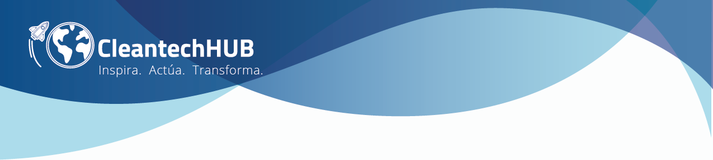
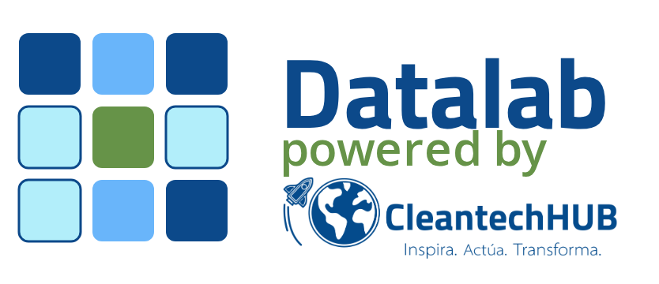

Panel: Innovación y emprendimiento en el territorio a través de los datos (ODS 13)
El panel abre el Datatón y el lanzamiento suave del Observatorio de la Tierra. Catorce equipos de estudiantes pasarán el día trabajando con datos de sus territorios, y este panel les da el punto de partida: cómo el emprendimiento local puede ofrecer soluciones a desafíos climáticos concretos, como inundaciones, erosión costera, agua o calidad del aire.
Participan
- - Natalia Vargas, APC-Colombia
- - Rector de la Universidad Externado
- - Viviana Obando, RAP Pacífico
- - Modera: Gideon Blaauw, CleantechHUB
Formato
Conversación moderada. Cada panelista recibe una o dos preguntas y una repregunta. Les pedimos respuestas cortas, de uno a dos minutos, con un ejemplo real del territorio. Cerramos con una ronda en la que cada uno nombra en una frase el desafío climático que le entregaría hoy a los equipos.
Preguntas guía
- - Natalia: desde la cooperación, ¿qué desafío climático en los territorios ya están apoyando con soluciones, y dónde puede entrar un emprendedor local?
- - Viviana: en el Pacífico, ¿qué problema climático resuelve o podría resolver un emprendimiento local?
- - Rector: ¿qué puede ofrecer en concreto la universidad a quien emprende frente a un problema climático?
- - Natalia y Viviana: ¿por qué esa solución debería salir de un emprendedor del territorio y no solo de un programa público?
- - Todos: en una frase, ¿qué desafío climático le entregarían hoy a los equipos?
A las 09:10, justo después del panel, presentamos el Observatorio de la Tierra y el Datalab: cómo poner datos a estos desafíos.
Observa. Actúa. Transforma.